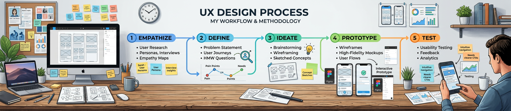

Over the past 17 years I have designed enterprise platforms, telecom applications and network infrastructure products by following a structured product design process. This approach ensures alignment between business objectives, technical feasibility and user experience improvements.
My process combines user research, workflow design, collaborative prototyping and continuous iteration to build scalable digital products.
Every product initiative begins with a deep understanding of the problem space by collaborating with stakeholders and product teams.
Miro, FigJam, Stakeholder Workshops
User research helps uncover behavior patterns and pain points that influence product design decisions.
Miro, FigJam
Research insights are translated into product strategy to align design decisions with business goals and product roadmap.
Jira, Confluence
Designing information architecture and workflows that simplify complex enterprise systems.
Figma, Miro
Wireframes and high-fidelity UI designs help visualize product concepts and validate solutions.
Figma, Adobe XD, Photoshop
Working closely with engineering teams to ensure accurate implementation of the design solutions.
Jira, Confluence, Azure DevOps
Testing with users helps refine the product experience and identify usability improvements.
Figma Prototypes
After release, product performance and adoption metrics are monitored to evaluate design success.
Grafana, Kibana
UX research methods help teams understand users, design better experiences, and validate product decisions. These methods are broadly categorized into Generative Research (discovering user needs) and Evaluative Research (testing design solutions).
| Method | Type | Data | Best For | Typical Scale |
|---|---|---|---|---|
| Usability Testing | Evaluative | Qual + Quant | Finding interaction problems | 5–15 users |
| Heuristic Evaluation | Evaluative | Qualitative | Expert review of interfaces | 3–5 evaluators |
| User Interviews | Generative | Qualitative | Understanding user motivations | 5–30 participants |
| Surveys / Questionnaires | Both | Quantitative | Measuring attitudes at scale | 100+ respondents |
| A/B Testing | Evaluative | Quantitative | Comparing design variations | 1000+ users |
| Card Sorting | Generative | Qual + Quant | Information architecture | 15–30 participants |
| Eye Tracking | Evaluative | Quantitative | Visual attention patterns | 20–40 participants |
| Diary Studies | Generative | Qualitative | Long-term behavioral patterns | 10–20 participants |
| Contextual Inquiry | Generative | Qualitative | Observing real-world usage | 5–15 participants |
Understanding users and their environment through interviews, contextual inquiry and diary studies.
Generating and refining ideas through card sorting, concept testing and participatory design workshops.
Evaluating usability through usability testing, A/B testing and heuristic evaluation.
Miro, FigJam, User Interviews
Figma, Adobe XD, Photoshop
Jira, Confluence, Azure DevOps
In recent projects I explored AI-assisted workflows to automate layout systems and accelerate prototyping.
Throughout my design process, I use a combination of research, design, collaboration and analytics tools to ensure effective product development and seamless team collaboration.
In recent projects, I have explored AI-assisted design workflows using tools and plugins that help automate layout adjustments, generate design variations and accelerate prototyping.
| Design Phase | AI Tool | How I Use It |
|---|---|---|
| Discovery | ChatGPTGemini | Synthesize interview notes, draft survey questions, competitor analysis |
| Ideation | ClaudeChatGPT | Explore problem framing, generate feature ideas, stress-test assumptions |
| Wireframing | Figma AILovable | Generate layout variations, rapid low-fidelity screens, component suggestions |
| Visual Design | Adobe FireflyMidjourney | Mood boards, icon concepts, AI-generated visual assets |
| Prototyping | Lovable.dev | AI-generated interactive React prototypes for stakeholder testing |
| Documentation | ChatGPTClaude | Auto-generate design specs, handoff notes, component descriptions |
| Presentation | GeminiChatGPT | Craft executive narratives, anticipate stakeholder questions |